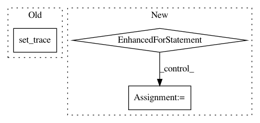

eeb1ac0da37e40b121be49fd7c47f75c3247bb40,tests/application_driver_test.py,ApplicationDriverTest,test_multi_device_inputs,#ApplicationDriverTest#,75
Before Change
test_driver.graph = test_driver._create_graph()
with self.test_session(graph=test_driver.graph) as sess:
sess.run(test_driver._init_op)
import pdb; pdb.set_trace()
coord = tf.train.Coordinator()
if __name__ == "__main__":
set_logger()
After Change
coord = tf.train.Coordinator()
for sampler in test_driver.app.get_sampler():
sampler.run_threads(sess, coord, test_driver.num_threads)
for i, train_op in test_driver.app.training_ops(0, 2):
sess.run(train_op)
s_0, s_1, s_2, s_3 = sess.run([
test_driver.graph.get_tensor_by_name(
"worker_0/feature_input:0"),
test_driver.graph.get_tensor_by_name(
"worker_1/feature_input:0"),
test_driver.graph.get_tensor_by_name(
"worker_2/feature_input:0"),
test_driver.graph.get_tensor_by_name(
"worker_3/feature_input:0")
])
msg = "same input data for different devices"
self.assertGreater(np.sum(np.abs(s_0 - s_1)), 0.0, msg)
self.assertGreater(np.sum(np.abs(s_0 - s_2)), 0.0, msg)
self.assertGreater(np.sum(np.abs(s_0 - s_3)), 0.0, msg)
self.assertGreater(np.sum(np.abs(s_1 - s_2)), 0.0, msg)
self.assertGreater(np.sum(np.abs(s_1 - s_3)), 0.0, msg)
self.assertGreater(np.sum(np.abs(s_2 - s_3)), 0.0, msg)
test_driver.app.stop()
def test_multi_device_gradients(self):
test_driver = get_initialised_driver()
In pattern: SUPERPATTERN
Frequency: 3
Non-data size: 3
Instances
Project Name: NifTK/NiftyNet
Commit Name: eeb1ac0da37e40b121be49fd7c47f75c3247bb40
Time: 2017-08-28
Author: wenqi.li@ucl.ac.uk
File Name: tests/application_driver_test.py
Class Name: ApplicationDriverTest
Method Name: test_multi_device_inputs
Project Name: NifTK/NiftyNet
Commit Name: 09f72ac06873b4069b8fddad769be3f1148a5791
Time: 2017-08-10
Author: wenqi.li@ucl.ac.uk
File Name: niftynet/application/segmentation_application.py
Class Name: SegmentationApplication
Method Name: connect_data_and_network
Project Name: NifTK/NiftyNet
Commit Name: e9fb47f90dacd64ee9bfe7aafca59b5ff75e739f
Time: 2017-08-13
Author: wenqi.li@ucl.ac.uk
File Name: niftynet/engine/input_buffer.py
Class Name: InputBatchQueueRunner
Method Name: _push
Project Name: NifTK/NiftyNet
Commit Name: eeb1ac0da37e40b121be49fd7c47f75c3247bb40
Time: 2017-08-28
Author: wenqi.li@ucl.ac.uk
File Name: tests/application_driver_test.py
Class Name: ApplicationDriverTest
Method Name: test_multi_device_inputs